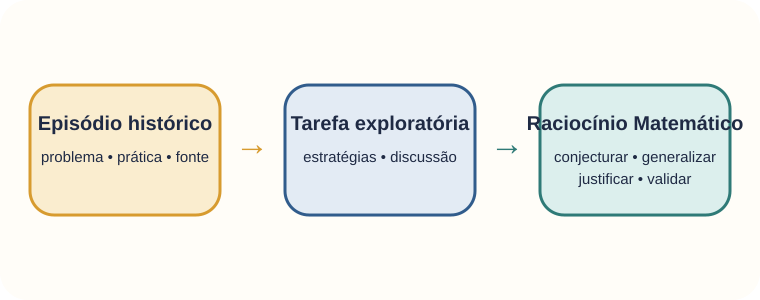

Para que serve este Guia Didático?
Este Guia Didático, Produto Educacional desenvolvido no contexto de uma pesquisa de mestrado, destina-se especialmente a professores que ensinam Matemática no 5º ano do Ensino Fundamental. Seu objetivo é oferecer propostas de tarefas exploratórias baseadas em episódios da História da Matemática, de modo a criar oportunidades para os estudantes investigar relações, elaborar estratégias, formular conjecturas, generalizar e justificar suas conclusões.
O Guia Didático pode apoiar o planejamento e a mediação docente. Ele não apresenta um roteiro obrigatório de aulas nem pressupõe a aplicação conjunta das atividades: cada tarefa é independente e pode ser selecionada de acordo com os objetivos pedagógicos e os conhecimentos da turma.
Conhecer o conteúdo do GuiaOrganização: três tarefas independentes acompanhadas de duas versões de material — uma docente e uma destinada aos alunos.
O que você encontrará neste material?
As três propostas relacionam um episódio histórico a um problema matemático e apresentam documentos próprios para o trabalho com cada público.
Multiplicação egípcia dos grãos
Exploração dos dobramentos sucessivos, de composições e decomposições de quantidades e das justificações matemáticas.
Nilômetro de Elefantina
Interpretação e comparação de medidas e investigação das relações entre diferentes unidades de comprimento.
Construção do Erecteion
Comparação de pagamentos em unidades monetárias distintas e elaboração de justificações sobre as relações observadas.
Material do professor
Contém orientações para o planejamento, aprendizagens necessárias, objetivos, conceitos abordados, habilidades da BNCC e possibilidades de análise do Raciocínio Matemático mobilizado pelos alunos.
Material dos alunos
Apresenta a contextualização histórica em História em Quadrinhos e as questões para exploração, registro de procedimentos, comunicação de ideias e elaboração de justificações.
Como utilizar o Guia Didático?
As tarefas podem ser utilizadas separadamente, sem ordem obrigatória. Recomenda-se que a escolha considere os conteúdos trabalhados, os conhecimentos prévios dos estudantes e as finalidades de aprendizagem da turma.
1. Selecione a tarefa
Analise o episódio histórico, os objetivos de aprendizagem e as possibilidades de exploração matemática.
2. Prepare a mediação
Consulte o material docente e planeje formas de acolher diferentes estratégias e incentivar a explicitação das ideias.
3. Desenvolva a atividade
Apresente aos estudantes o material dos alunos, oportunizando a investigação individual ou coletiva conforme a organização da aula.
4. Discuta e analise as produções
Valorize comparações de procedimentos, argumentações e justificações, observando os tipos e processos de Raciocínio Matemático manifestados.
História da Matemática e Raciocínio Matemático
A pesquisa que fundamenta este Guia Didático foi orientada pela questão: Como a História da Matemática pode contribuir para o desenvolvimento do Raciocínio Matemático no Ensino Fundamental I?
A História da Matemática é tomada como tendência metodológica para organizar situações de aprendizagem que possibilitem explorar conceitos e relações matemáticas. Para aprofundar os fundamentos teóricos, consulte as páginas dedicadas à História da Matemática e ao Raciocínio Matemático.
